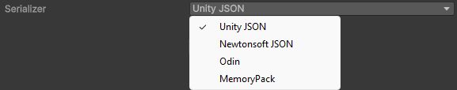

What can be saved
Choose a serializer
A serializer turns your asset's data into the bytes a save holds, so it decides which members of your class reach that save. Persistent Asset works with four of them, and each manager carries its own. To change it, select one from the Serializer dropdown in the manager's Inspector window.

If your project already uses Newtonsoft or Odin, you can keep to that one here: it appears in the dropdown as soon as its library is in the project. Otherwise, the choice follows what your class holds:
| Serializer | Choose it when | Needs |
|---|---|---|
| Unity JSON | Unity's own serialization reaches everything you save. This is the default. | Nothing |
| Newtonsoft JSON | Your class holds dictionaries, properties, or a field whose type Unity's serialization doesn't reach. | The com.unity.nuget.newtonsoft-json package |
| Odin | Your class holds what Unity's serialization can't, and the save should be binary rather than JSON. | Odin Inspector, or the free standalone Odin Serializer |
| MemoryPack | The size and the speed of a save matter more than anything else. | The com.cysharp.memorypack package and the MemoryPack NuGet libraries |
ISerializationCallbackReceiver on your nested types. Implement
ISerializationCallbacks on the asset instead,
which every serializer calls.Unity JSON
Unity JSON writes the save through Unity's own serialization, so a save holds the fields Unity itself serializes. It is the default, and needs nothing added to the project.
For the rules those fields follow, refer to Unity's script serialization documentation.
Newtonsoft JSON
Newtonsoft JSON reaches what Unity's serialization leaves out: dictionaries, properties, nullables,
a field that is null rather than an empty instance, and a field whose type Unity refuses.
Switching to it never drops a field.
For what Newtonsoft supports and how to configure it, refer to the Json.NET documentation.
Odin
Odin covers the same ground as Newtonsoft, and saves shared references and polymorphic types with nothing to configure. Its Binary format produces a way smaller payload than its Json one, and writes it far faster.
For what Odin supports, refer to the Odin documentation.
MemoryPack
MemoryPack writes the smallest and the fastest saves of the four, but it has limitations and takes
some setup. Your persistent classes have to derive from MemoryPackScriptableObject and
follow MemoryPack's own rules about the members it writes.
For those rules, refer to the MemoryPack documentation.
Size and speed
The following table compares the four serializers on one save that holds 700 objects, each with a name, a transform, a few values and a short list.
| Serializer | Size | Gzipped | Round trip |
|---|---|---|---|
| Unity JSON | 428 KB | 78 KB | 8 ms |
| Newtonsoft JSON | 377 KB | 65 KB | 35 ms |
| Odin Json | 554 KB | 61 KB | 137 ms |
| Odin Binary | 182 KB | 45 KB | 6 ms |
| MemoryPack | 55 KB | 32 KB | 0.7 ms |
Until a save grows large, compression changes its size more than the choice of serializer does.
Change the serializer later
Changing a serializer is possible even after your game has shipped.
Each serializer writes a different format, so one serializer can't read what another wrote. When you change the serializer on a locked manager, the package offers to keep the old setup as an import copy, which reads those saves once and writes them back in the new format.
Create your own serializer
To save data in a format the built-in serializers don't support, create a class that inherits
Serializer. Your class then appears in the Serializer dropdown alongside
them. For more information, refer to Create a custom
serializer.